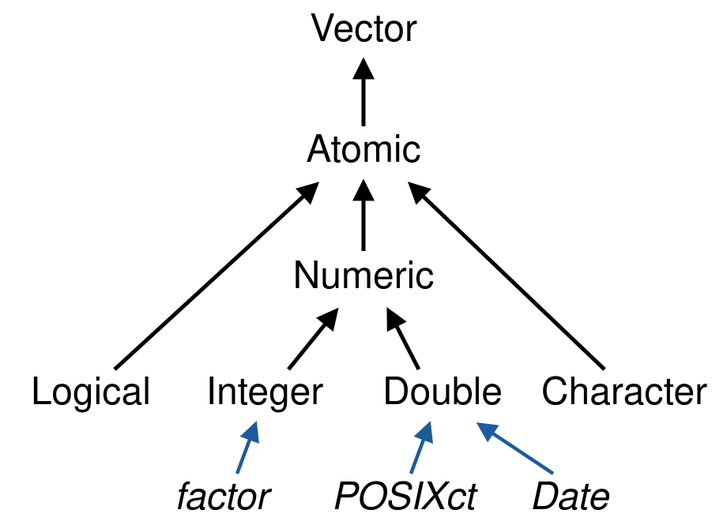

Tema 02
Tipos y estructuras de datos
Introducción a R · Ciencias Médicas, Odontológicas y de la Salud
UNAM · Semestre 2027-1 · Modalidad en línea
Ing. Luis Alberto Meza Cova
LABBIC — INER

Antes de empezar
Objetivo de la unidad
Elegir la estructura que corresponde al problema —vector, matriz, factor, data frame o lista— y justificar la elección; y seleccionar subconjuntos de datos por posición, por nombre y por condición lógica sin escribir un solo ciclo.
Los tres tipos básicos
El caso: una suma que falla
- Los dos «son 42 y 10» para ti
- Para R, uno es un número y el otro es texto
Qué tipo es cada cosa
Los tres tipos
Qué contesta class()
Con comillas es texto, siempre. Da igual que dentro haya un número o la palabra TRUE.
Los tres errores clásicos
Practica · arregla el error
Este bloque no corre. Arréglalo sin borrar ninguna línea:
- Pista 1: primero averigua qué tipo es cada variable
- Pista 2: la solución es una línea más, no cambiar las comillas
Lo que acabas de usar es una función
class() y as.numeric() son funciones: bloques de código con nombre que hacen una tarea y se reutilizan.
- Se reconocen por los paréntesis después del nombre
?nombrete dice qué argumentos acepta — unidad 01
El class() de R está escrito en C: R_data_class, en src/main/attrib.c del código fuente
Vectores
Un vector es una fila de casilleros
Una colección ordenada de elementos del mismo tipo.
Del mismo tipo no es un detalle: es la definición. c() viene de combine.
Practica · tu primer vector
- Crea
edadescon los valores34, 28, 45, 52, 39 - Aplica
class()al vector - Aplica
length(). ¿Qué te dice? - Crea
nombrescon cinco nombres de pila y aplícaleclass()
length() no la habíamos visto. Ábrela con ?length si tienes dudas.
Qué pasa si mezclas tipos
- R no da error: convierte al tipo que lo admite todo
- Se llama coerción:
lógico → numérico → carácter
Practica · la coerción
Antes de correr cada línea, escribe qué crees que va a pasar:
class(c(1, 2, 3))class(c(1, 2, "3"))sum(c(1, 2, 3))sum(c(1, 2, "3"))class(c(TRUE, 1))
Solo una de las cinco da error. ¿Cuál esperabas?
Practica · respuestas
Regla práctica: si un sum() falla sin motivo aparente, class() al vector antes que nada.
Otras formas de crear vectores
Practica · secuencias
- Crea un vector con los números del 1 al 20
- Crea uno con los números del 10 al 1, en ese orden
- Crea uno de 0 a 100 de diez en diez
- Crea uno con el texto
"control"repetido 4 veces - Suma todos los elementos del primero
Nombres e indexación
Ponerle nombre a cada casillero
Casos confirmados en seis estados. Los números solos no dicen de quién son.
names() no junta dos vectores
- Le pega una etiqueta a cada posición del vector que ya existe
- Los datos son exactamente los mismos que antes
nameses un atributo del vector, no una segunda columna
Y sirve para leer: casos_marzo["Puebla"] devuelve 670, sin contar posiciones.
Cuatro formas de seleccionar
Practica · selecciona
Con casos_marzo, el vector con nombres:
- El valor de Jalisco, por nombre
- El valor de Jalisco, por posición
- Los tres primeros estados
- Todos menos el primero
- Los estados con más de 1 000 casos
- ¿Cuántos estados cumplen la condición 5?
Practica · respuestas
Los nombres viajan con los datos a través del filtro. Por eso valía la pena ponerlos.
La cuarta es la que importa
- La condición no devuelve los datos: devuelve
TRUE/FALSE - Ese vector es lo que va dentro de los corchetes
- R se queda con las posiciones que valen
TRUE
Practica · la condición, en dos pasos
- Corre solo
casos_marzo > 1000. ¿Qué tipo de vector es? - Guárdalo en una variable llamada
muchos - Ahora corre
casos_marzo[muchos] - Corre
sum(muchos). ¿Por qué da un número?
Operaciones con vectores
Operar sobre el vector entero
- R suma posición por posición, sin que escribas un ciclo
Operar, o resumir
| Devuelve | |
|---|---|
Elemento a elemento (+, *, >) |
un vector del mismo largo |
Agregación (sum, mean, min, max) |
un solo número |
¿Y si no miden lo mismo?
Solo dos estados mandaron el reporte de abril:
R no da error. Pero Yucatán lleva sumados los casos de CDMX, y Puebla los de Jalisco: cuatro de los seis números son inventados.
La regla del reciclado
R repite el vector corto hasta emparejar al largo:
| CDMX | Jalisco | Yucatán | Puebla | N. León | Chiapas | |
|---|---|---|---|---|---|---|
casos_marzo |
1200 | 850 | 430 | 670 | 1500 | 920 |
casos_abril |
1300 | 900 | 1300 | 900 | 1300 | 900 |
| suma | 2500 | 1750 | 1730 | 1570 | 2800 | 1820 |
En cursiva, lo que R repitió sin pedirlo. En negrita, los cuatro resultados falsos. El resultado tiene siempre el largo del vector más largo.
El caso peligroso es el que no avisa
El aviso salta solo si el largo mayor no es múltiplo del menor. Antes de operar dos vectores: length() a los dos.
Practica · casos totales
- Crea
casos_totalessumando enero y marzo, estado por estado - ¿Cuántos casos hubo en total en los dos meses, en todo el país?
- ¿Cuál fue el promedio por estado en enero?
- ¿Qué estado tuvo menos casos en marzo? Encuéntralo con R
- Predice antes de correr: ¿qué da
casos_marzo + c(100, 200)? ¿Cuántos valores tiene? ¿Avisó R?
Para la 4, min() te da el número. which.min() te da cuál es.
Ejercicio · letalidad de enero
\[ L = \frac{D}{C} \times 100 \]
¿Qué estados tuvieron letalidad mayor a 3 en enero?
Dos líneas: una para calcular la letalidad, otra para filtrar.
Ejercicio · respuesta
Ejercicio · enero contra marzo
¿En qué estados la letalidad fue mayor en enero que en marzo?
Un resultado vacío no es un error
named numeric(0) dice cuatro cosas: es un vector, es numérico, tiene nombres y su longitud es cero. En ningún estado se cumplió la condición.
Tarea de la primera sesión
Antes de la próxima clase:
- Guarda todo lo que practicaste en
sesion02.R - Crea
defunciones_totalessumando enero y marzo - ¿Qué estados tuvieron más de 100 defunciones en total?
- Un comentario de una línea: ¿por qué
c(1, 2, "3")no es numérico?
Parte B
Practica · repaso de la parte A
Sin mirar los apuntes:
- Crea un vector con
10, 20, 30y ponle los nombresa,b,c - Saca el segundo elemento de dos formas distintas
- ¿Qué devuelve
mi_vector > 15? ¿Ymi_vector[mi_vector > 15]? - ¿De qué tipo es
c(1, "dos")?
Matrices
Cuando una fila de casilleros no basta
Cuatro alimentos, cuatro variables cada uno. Por 100 g:
| kcal | Carbohidratos | Proteínas | Grasas | |
|---|---|---|---|---|
| Manzana | 52 | 14 | 0.3 | 0.2 |
| Pollo | 165 | 0 | 31 | 3.6 |
| Arroz | 130 | 28 | 2.7 | 0.3 |
| Frijoles | 127 | 23 | 9 | 0.5 |
- Con vectores harían falta cuatro, y perderías que cada fila es un alimento
R llena las matrices por columnas
El 1, 2, 3 quedó en la primera columna, no en la primera fila.
Practica · ¿dónde cae el 4?
- Antes de correrlo: ¿dónde crees que cae el
4enmatrix(1:12, nrow = 3, ncol = 4)? - Córrelo y compruébalo
- Ahora corre lo mismo añadiendo
byrow = TRUE. ¿Qué cambió?
byrow = TRUE: llenar como se lee
Cada vector es un alimento, así que hay que llenar por filas. Sin byrow la matriz sale transpuesta y con el sentido físico equivocado.
Nombres de filas y de columnas
colnames(nutricion_matrix) <- c("Calorias", "Carbohidratos",
"Proteinas", "Grasas")
rownames(nutricion_matrix) <- c("Manzana", "Pollo", "Arroz", "Frijoles")
nutricion_matrix
#> Calorias Carbohidratos Proteinas Grasas
#> Manzana 52 14 0.3 0.2
#> Pollo 165 0 31.0 3.6
#> Arroz 130 28 2.7 0.3
#> Frijoles 127 23 9.0 0.5Añadir filas y columnas
rbind() pega filas; cbind(), columnas. Las nuevas llevan seis valores, uno por fila: si el largo no coincide, R recicla o falla.
Practica · construye la matriz
- Copia y corre las tres diapositivas anteriores, en orden
- Comprueba el tamaño con
dim(nutricion_final) - Corre
str(nutricion_final). ¿Qué te dice que no te decíadim()? - Corre
summary(nutricion_final)
str() es la función que más se usa en la vida real y la que menos se enseña.
Seleccionar: matriz[fila, columna]
Dejar el hueco vacío significa «todas». La coma nunca se omite: es lo que separa filas de columnas.
Practica · selecciona en la matriz
- Las calorías del pollo
- Toda la fila del arroz
- La columna de proteínas completa
- Las filas del huevo y las lentejas, solo con calorías y grasas
- ¿Qué pasa si escribes
nutricion_final["Pollo"], sin la coma?
Seleccionar por condición
La coma no es un adorno
No da error. Con un solo argumento R deja de tratarla como matriz, la aplana a sus 36 celdas y recicla tu condición de 6. Si ves números sueltos donde esperabas filas: te faltó la coma.
Una sola fila deja de ser matriz
Ya no es una matriz: es un vector, y el nombre «huevo» desapareció.
Un NA hace una fila fantasma
Si un dato es NA, la condición sale NA — que no es TRUE ni FALSE. El antídoto es which(), que se queda solo con los TRUE de verdad: nutricion_final[which(cond), ]
Practica · una condición a la vez
Sobre nutricion_final, y guardando siempre la condición aparte:
- Guarda en
pocas_calla condición «menos de 130 calorías». ¿Qué tipo de objeto es? ¿Cuántos elementos tiene? - Úsala para quedarte con esas filas. ¿Cuántas quedaron?
- Corre lo mismo sin la coma. ¿Cuántos valores salen y por qué?
- Ahora los que tienen más de 10 g de grasa. ¿Sigue siendo una matriz? Compruébalo con
is.matrix()
Practica · respuestas
La 1 es la que más enseña: la condición tiene un elemento por fila, no uno por fila que cumple. Por eso sirve de índice.
Tres operadores para combinar condiciones
A |
B |
A & B |
A | B |
!A |
|---|---|---|---|---|
TRUE |
TRUE |
TRUE |
TRUE |
FALSE |
TRUE |
FALSE |
FALSE |
TRUE |
FALSE |
FALSE |
TRUE |
FALSE |
TRUE |
TRUE |
FALSE |
FALSE |
FALSE |
FALSE |
TRUE |
& (Y) las dos · | (O) al menos una · ! (NO) invierte. Mira la primera fila: el | de R es inclusivo, TRUE | TRUE da TRUE.
& — las dos a la vez
¿Qué alimentos tienen más de 10 g de proteína Y menos de 15 g de carbohidratos?
| — al menos una de las dos
¿Qué alimentos son ricos en fibra O bajos en sodio?
Con & habrían salido dos; con |, cuatro. El | suma, el & resta.
! — lo que no cumple
Todos los alimentos menos la manzana:
rownames() devuelve texto; compararlo con == da un vector lógico, y ! lo voltea entero.
Practica · tres preguntas
Contesta cada una con una selección, guardando las condiciones aparte:
- ¿Qué alimentos tienen más de 5 g de fibra o menos de 1 g de grasa?
- ¿Cuáles tienen poco sodio (< 10) y poca grasa (< 10), pero no son la manzana?
- Inventa tú una pregunta con dos condiciones y contéstala
Para la 2 necesitas rownames() y el operador !.
Practica · respuestas
# 1
nutricion_final[nutricion_final[, "Fibra"] > 5 |
nutricion_final[, "Grasas"] < 1, ]
#> Manzana, Arroz, Frijoles, lentejas
# 2
low_sod <- nutricion_final[, "Sodio_mg"] < 10
low_gras <- nutricion_final[, "Grasas"] < 10
es_manzana <- rownames(nutricion_final) == "Manzana"
nutricion_final[low_sod & low_gras & !es_manzana, ]
#> Arroz, Frijoles, lentejasResumir por columna, y por fila
Practica · resumir, y decidir si tiene sentido
- Corre
rowSums(nutricion_final). ¿Qué significa el 273.6 del pollo? - Corre
rowSums(macros). ¿Por qué este sí se puede interpretar? colMeans(nutricion_final): de las seis medias, ¿cuáles usarías en un reporte?- ¿Qué alimento aporta más macronutrientes en total? Búscalo con R
R nunca te va a decir que una suma no tiene sentido. Eso lo decides tú.
Practica · respuestas
La 3 no tiene una respuesta única: se puede promediar lo que comparte unidad y contexto. La media de Sodio_mg mezcla alimentos muy distintos y dice poco.
Data frames
La estructura que probablemente uses más
El nombre de un alimento es texto, sus calorías son número y si es vegetariano es lógico. Una matriz no puede: exige un solo tipo.
Mirarlo antes de tocarlo
Las cinco funciones de inspección
| Función | Para qué |
|---|---|
str() |
estructura y tipos — la primera siempre |
summary() |
resumen por columna |
head() · tail() |
las 6 primeras o últimas filas |
dim() · nrow() · ncol() |
tamaño |
names() · colnames() |
nombres de columna |
head(nutricion_df, n = 3) muestra solo las tres primeras.
Sacar y añadir columnas
nutricion_df$Calorias #> [1] 52 165 130 127 155 116
nutricion_df[["Nombre"]] # útil si el nombre está en una variable
nutricion_df[, 2] # por posición
nutricion_df[1, ] # primera fila
nutricion_df[c(1, 2), c("Nombre", "Grupo")] # filas y columnas
nutricion_df$Fibra <- c(2.4, 0, 0.1, 7, 0, 8) # añadir: lo mismo, al revés$ es el que se usa el 90 % de las veces. Con Tab después del $ RStudio te ofrece los nombres de columna.
Filtrar filas por condición
Practica · filtra el data frame
- Los alimentos del grupo
"Proteína" - Los vegetarianos con menos de 120 calorías
- Los que no son vegetarianos
- Añade una columna
Proteinasconc(0.3, 31, 2.7, 9, 13, 9) - ¿Qué pasa si le pasas un vector de cinco valores?
Un data frame de verdad, sin teclear nada
cars ya viene con R: 50 frenadas medidas en los años veinte, con la velocidad en millas por hora y la distancia de frenado en pies.
Dos condiciones sobre 50 filas
Siete cumplen una, treinta y ocho la otra, y solo una las dos. Con | en lugar de & serían quince.
Los tres operadores, en números
| Condición | Frenadas de 50 |
|---|---|
rapidos |
7 |
cerca |
38 |
rapidos & cerca |
1 |
rapidos \| cerca |
44 |
!rapidos |
43 |
7 + 38 = 45, pero el | da 44: la que cumple las dos se cuenta una sola vez.
Practica · frenadas
Guarda cada condición en su propia variable antes de usarla:
- ¿Cuántas frenadas pasan de 15 mph? Cuéntalas con
sum() - Las de más de 20 mph o que frenaron en menos de 20 pies
- Las de más de 20 mph que no pasaron de 80 pies
- En cada caso, ¿cuántas filas quedaron de las 50?
Factores
Un factor es un vector que solo puede contener valores predefinidos. Se usa para guardar datos categóricos. Los factores se construyen sobre un vector de enteros con dos atributos: una clase, "factor", que hace que se comporte distinto de los vectores de enteros normales, y unos niveles (levels), que definen el conjunto de valores permitidos.

Wickham (2019), Advanced R, 2.ª ed., §3.4.1 · CC BY-NC-SA 4.0 · traducción propia
Dónde está el factor entre los vectores

- En negro, los tipos básicos;
integerydoubleson los numéricos - En azul, lo que se construye encima de un tipo básico, con atributos
factorestá sobreinteger; las fechas,DateyPOSIXct, sobredouble
Figura: Wickham (2019), Advanced R, 2.ª ed., §3.4 · CC BY-NC-SA 4.0 · redibujada
Cuando el texto es en realidad una categoría
La columna Grupo del data frame es texto. Pero no es texto: es una categoría.
Los datos y el catálogo
Mismos cinco datos. El factor contiene los datos (length(f) es 5) y además conoce las respuestas posibles (nlevels(f) es 4).
Un conjunto cerrado
Es un aviso, no un error: el código sigue corriendo y el dato se pierde.
Contar categorías
summary() de una matriz numérica daba cuartiles. De un factor da un conteo. La misma función se comporta según lo que le des.
Lo que se ve y lo que se guarda
Tres piezas: los códigos enteros, el catálogo (levels) y la etiqueta (class) que le dice a R que busque cada código en el catálogo.
Declarar el orden: levels y relevel()
Un valor que no esté en levels se vuelve NA. Antes de declarar, mira qué hay con unique(x): un «Leve» con mayúscula basta para perder datos.
Categorías que tienen orden
El orden alfabético es una trampa
Sin levels, R ordena alfabéticamente: Grande < Mediana < Pequeña. Que es justo al revés.
- El factor queda ordenado y las comparaciones funcionan
- El resultado está invertido y nada avisa
levels ordena, ordered compara
| Argumento | Qué decide | Para qué sirve |
|---|---|---|
levels = c(...) |
el orden de las categorías | tablas, gráficas y referencia |
ordered = TRUE |
si se pueden comparar con < y > |
escalas con jerarquía real |
Son independientes. Para filtrar basta ==, que funciona siempre; ordered solo hace falta para preguntar «mayor que».
De números a categorías: cut()
right = FALSE incluye el límite inferior: alguien de 40 años cae en «40-59». Los cortes se deciden por criterio clínico, antes de mirar los datos.
Practica · una escala clínica
- Conviértelo en factor ordenado, de leve a grave
- Cuenta cuántos hay de cada nivel
- Comprueba que
factor_sev[1] > factor_sev[2]daTRUE - Ahora hazlo sin
levels, manteniendoordered = TRUE, y compara el resultado del punto 3
Practica · respuestas
En el 4 el orden quedó Grave < Leve < Moderado: la comparación da FALSE y nada avisa.
La trampa de as.numeric()
Para qué sirve de verdad un factor
lm()yglm()generan automáticamente el análisis por grupoggplot2le da un color, una faceta o una caja a cada nivel- El orden de los niveles decide el orden en tablas y gráficas
Datos reales: categorías como números
Para R son enteros. Que el 1 signifique «bajo peso» (menos de 2.5 kg) o «fumó en el embarazo» solo lo dice el diccionario de datos: ?MASS::birthwt.
Decirle a R qué significa cada código
levels dice qué códigos existen y en qué orden; labels dice cómo se llama cada uno, en ese mismo orden.
La misma tabla, antes y después
Mismos números. Solo la segunda se entiende sin abrir el diccionario de datos.
El mismo grupo, dos modelos
# bwt: peso al nacer, en gramos · race: 1 = blanca, 2 = negra, 3 = otra
coef(lm(bwt ~ race, data = MASS::birthwt))
#> (Intercept) 3230 race -155
nacimientos$race <- factor(nacimientos$race, levels = 1:3,
labels = c("blanca", "negra", "otra"))
coef(lm(bwt ~ race, data = nacimientos))
#> (Intercept) 3103 racenegra -383 raceotra -297Con los códigos, lm() ajusta una pendiente que supone distancias iguales entre grupos. Como factor, compara cada grupo con el primero, «blanca».
Qué entendió lm() en cada modelo
Con los códigos, race es un número y hay una sola pendiente:
\[\text{bwt} = 3230 - 155 \cdot \text{race}\]
Cada paso, de 1 a 2 y de 2 a 3, resta lo mismo: 155 g.
Como factor, cada grupo tiene su propio coeficiente:
\[\text{bwt} = 3103 - 383 \cdot \text{negra} - 297 \cdot \text{otra}\]
negra y otra valen 1 o 0. En «blanca» las dos valen 0: por eso 3103 es su promedio.
Con los códigos, R traza una recta entre los grupos. Como factor, le da a cada grupo su promedio.
La categoría de referencia
La primera categoría es la referencia. Las medias no cambian; cambia contra quién se compara.
Por qué es el mismo modelo
Con «no fumó» como referencia:
\[\text{bwt} = 3056 - 284 \cdot \text{fumó}\]
Con «fumó» como referencia:
\[\text{bwt} = 2772 + 284 \cdot \text{no fumó}\]
Sustituye 0 y 1: las dos ecuaciones dan 3056 g sin fumar y 2772 g fumando. Mismos promedios; solo cambia desde qué grupo se mide la diferencia.
Practica · prepara datos reales
- Corre
coef(lm(lwt ~ race, data = nacimientos))conracetal como viene. ¿Cuántos coeficientes da? Escribe su ecuación - Convierte
raceen factor con esas etiquetas y corre el mismo modelo. ¿Cuántos coeficientes da ahora y cuál es la referencia? - ¿Cuánto pesaban en promedio las madres de cada grupo? ¿El primer modelo cuenta la misma historia?
- Cambia la referencia a «negra» con
relevel()y vuelve a correr el modelo. ¿Qué cambió y qué no?
Practica · respuestas
coef(lm(lwt ~ race, data = nacimientos)) # 1 lwt = 140 - 5.5 · race
nacimientos$race <- factor(nacimientos$race, levels = 1:3,
labels = c("blanca", "negra", "otra"))
coef(lm(lwt ~ race, data = nacimientos)) # 2 y 3
#> (Intercept) 132.05 racenegra 14.76 raceotra -12.04
nacimientos$race <- relevel(nacimientos$race, ref = "negra")
coef(lm(lwt ~ race, data = nacimientos)) # 4
#> (Intercept) 146.81 raceblanca -14.76 raceotra -26.79Con los códigos, las madres negras «pesan menos»; en realidad, 15 libras más.
Listas
Una lista es un contenedor que guarda objetos de cualquier tipo y cualquier largo, cada uno en su propio compartimento.

Cuatro cosas que no caben juntas
Un brote en investigación: un nombre, una tabla de casos, quién tuvo contacto con quién y si el brote sigue activo.
Un texto, un data frame, una matriz y un lógico: ni un vector, ni una matriz, ni un data frame pueden guardar las cuatro cosas juntas.
Cuando nada de lo anterior cabe
Cada pieza entra en su compartimento con un nombre: nombre = objeto.
Mirar una lista
length() cuenta compartimentos, no datos: el data frame entero cuenta como uno solo.
Sacar cosas de una lista

Analogía del tren: Wickham (2019), Advanced R, 2.ª ed., §4.3.1
Un corchete de menos
Con un solo corchete sacas una caja que contiene el data frame, y esa caja no tiene ningún compartimento llamado Edad. R no da error: devuelve NULL.
$: el atajo por nombre
$ equivale a [[ ]] con el nombre: saca lo que hay dentro. Es el mismo $ de los data frames.
Por posición, y con el nombre en una variable
[[ ]] acepta una posición o un nombre guardado en una variable. $ solo acepta el nombre escrito tal cual.
Cajas dentro de cajas
Se lee de izquierda a derecha, abriendo una caja cada vez: primero la lista, luego el data frame, luego la columna, luego la posición.
Añadir y cambiar elementos
La misma línea añade o cambia: si el nombre existe, lo sustituye; si no, crea un compartimento nuevo al final.
Quitar un elemento: NULL
Asignar NULL borra el compartimento, no lo vacía: lo que había ahí se pierde.
Cuando cada caso mide distinto
Cada paciente tiene un número distinto de diagnósticos. Un data frame exige columnas del mismo largo; una lista, no.
Practica · el expediente de un paciente
- Júntalos en una lista
paciente, cada uno con su nombre, y revísala constr() - ¿Cuántos diagnósticos tiene?
- Saca la presión sistólica de la última visita
- Añade
alergiascon «penicilina» y después quitaedad. ¿Cuántos elementos quedan? - ¿Qué devuelve
paciente["signos"]$sistolica? ¿Por qué?
Practica · respuestas
En el 5, [ ] devuelve la caja, y la caja no tiene ningún sistolica.
El data frame es una lista
Por eso $ y [[ ]] funcionan en los data frames: cada columna es un compartimento de una lista.
Los modelos son listas
lm() devuelve una lista de 13 compartimentos, y summary() devuelve otra.
Practica · de vectores a listas
- Vector: guarda
bwtenpesoy cuenta cuántos bebés pesaron menos de 2500 g - Factor: convierte
smokeen factor con las etiquetas «no fumó» y «fumó» - Data frame: guarda en
fumadorassolo las madres que fumaron, con las columnasageybwt. ¿Cuántas son? - Matriz: haz la tabla de
smokecontralowy saca con[fila, columna]cuántas madres que fumaron tuvieron un bebé con bajo peso - Lista: junta
peso,fumadorasytablaen una listaresumeny saca de ahí la edad de la primera madre que fumó
Practica · respuestas
peso <- nacimientos$bwt
sum(peso < 2500) #> 59 # 1
nacimientos$smoke <- factor(nacimientos$smoke, levels = c(0, 1),
labels = c("no fumó", "fumó")) # 2
fumadoras <- nacimientos[nacimientos$smoke == "fumó", c("age", "bwt")]
nrow(fumadoras) #> 74 # 3
tabla <- table(nacimientos$smoke, nacimientos$low)
tabla["fumó", "1"] #> 30 # 4
resumen <- list(peso = peso, fumadoras = fumadoras, tabla = tabla)
resumen$fumadoras$age[1] #> 20 # 5Cierre
La escalera de la unidad
| Estructura | Guarda | Se rompe cuando… |
|---|---|---|
| Vector | un tipo, una dimensión | necesitas filas y columnas |
| Matriz | un tipo, dos dimensiones | las columnas son de tipos distintos |
| Data frame | tipos distintos, mismo largo | los elementos no miden lo mismo |
| Lista | cualquier cosa | — no se rompe, por eso es la última |
Y fuera de la escalera, el factor: no es un contenedor, es un vector que sabe a qué categoría pertenece cada dato.
Lo que se repitió tres veces
- La condición devuelve un vector de
TRUE/FALSE - Ese vector va entre corchetes, y R se queda con lo que valga
TRUE
Lo que sigue
- Ya sabes guardar datos con la estructura correcta
- Y seleccionar exactamente el subconjunto que te interesa
- Lo que falta es verlos
Introducción a R · Maestría en Ciencias Médicas, UNAM · LABBIC-INER · 2027-1